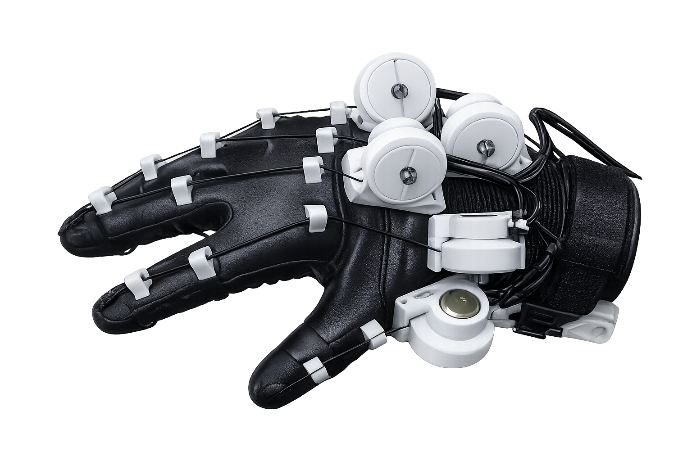
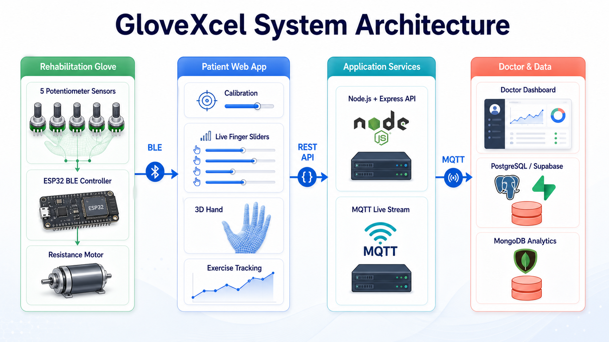

Motion Tracking
Tracks finger bending, hand orientation, and rehabilitation movements using embedded wearable sensors.
01Introducing GloveXcel
Smart Home-Based Hand Rehabilitation System
A wearable rehabilitation glove that helps patients perform hand therapy exercises at home with motion tracking, real-time feedback, and therapist-guided progress monitoring.

Connected tools that turn repeated hand therapy into a guided, visible process.
Tracks finger bending, hand orientation, and rehabilitation movements using embedded wearable sensors.
01Provides vibration feedback when the patient performs an incorrect or incomplete movement.
02Records repetitions, angles, force levels, exercise sessions, and rehabilitation progress.
03Allows doctors and therapists to review patient performance and rehabilitation history remotely.
04
GloveXcel is a rehabilitation system created to make hand therapy more accessible, interactive, and measurable. It is designed for patients who require repeated hand exercises but may experience difficulty travelling to therapy centres regularly.
GloveXcel combines wearable sensors, an ESP32-based control unit, haptic feedback, and a web or mobile dashboard to guide patients through rehabilitation exercises. The system allows patients to complete therapy sessions from home while giving therapists access to progress data.
Patients recovering from stroke, arthritis, or surgery often require continuous hand therapy.
Travelling to therapy centres can be difficult for patients with mobility limitations.
Home rehabilitation exercises are difficult to monitor accurately.
Patients may perform movements incorrectly without real-time feedback.
Therapists need better methods to monitor patient progress remotely.
Seven engineering goals connect wearable sensing with practical, supervised therapy outside the clinic.
Track finger and hand movements using embedded sensors.
Provide real-time feedback when movements deviate from therapy targets.
Support patient calibration and doctor calibration.
Allow patients to complete self-guided rehabilitation exercises.
Allow therapists to monitor patient progress remotely.
Store and visualise exercise and session data.
Improve access to rehabilitation outside clinical environments.
From the first calibration to long-term session review, each feature supports a clearer rehabilitation workflow.
Tracks finger and hand movement using embedded wearable sensors.
Uses vibration motors to alert patients when a movement requires correction.
Stores patient-specific minimum and maximum finger movement values.
Stores doctor or reference movement values for comparison with patient performance.
Displays real-time glove movement and monitors the patient’s current hand motion.
Supports assigned rehabilitation exercises with target repetitions, sets, and force levels.
Tracks exercise performance, maximum angles, repetitions, and session history.
Allows therapists to review patients, assigned exercises, and rehabilitation progress.
Uses adjustable motor force levels to provide therapeutic resistance during exercises.
A five-stage path converts physical movement into guidance and reviewable progress data.
Sensors capture finger bending, hand orientation, force, and hand movement.
The ESP32 reads sensor values and communicates with the rehabilitation application.
Live movements are compared with patient calibration, doctor calibration, or exercise targets.
Vibration motors alert the patient when movement correction is required.
Exercise results and analytics are stored for patient and therapist review.
A coordinated set of sensors, feedback devices, control electronics, and mechanical elements.
Measure finger joint movement.
Detect bending and force-related changes.
Track hand orientation and motion.
Processes sensor data and manages wireless communication.
Provide haptic correction feedback to the patient.
Supports adjustable resistive force control.
Creates therapeutic resistance during finger movement.
Powers the wearable glove system.
Holds sensors, control components, and feedback devices securely on the hand.
The wider GloveXcel project connects role-based interfaces, wireless communication, APIs, and structured data services. This website is a static project showcase only; these services are presented as system architecture and are not implemented here.
Responsive patient and doctor dashboards with interactive 3D hand visualisation.
Bluetooth or BLE and wireless glove communication.
Access architecture for admin, doctor, and patient roles.
Node.js, Express, MongoDB or database storage.
Calibration · Exercise · Live analytics · Preloaded analytics · Force control · Therapy sessions
Nine coordinated modules support the complete therapy journey.
Complete guided hand rehabilitation sessions from home.
Support repeated hand exercises during recovery workflows.
Support structured hand and finger mobility exercises.
Guide assigned finger movement exercises after surgery.
Connect patient activity with therapist review and direction.
Make therapy more engaging through visible feedback and goals.
GloveXcel explores how engineering can make prescribed hand exercises easier to access, follow, and review.
Testing covers sensing, calibration, feedback, exercise flows, services, analytics, and prototype usability—without unsupported clinical claims.
Sensor readings reviewed across intended hand movements.
Patient range capture and stored values checked.
Reference movement capture and comparison checked.
Correction feedback behaviour tested against triggers.
Repetitions, targets, and movement records checked.
Real-time movement workflow and display verified.
Assigned exercise flow and target handling verified.
Data, authentication, exercise, and therapy-session services tested within the wider system.
Session records and analytical views evaluated.
Overall prototype interaction and workflow evaluated.
Developed as a 3rd Year Undergraduate Project in Computer Engineering.
GloveXcel combines wearable sensing, real-time feedback, exercise guidance, and progress monitoring to support effective home-based hand rehabilitation.